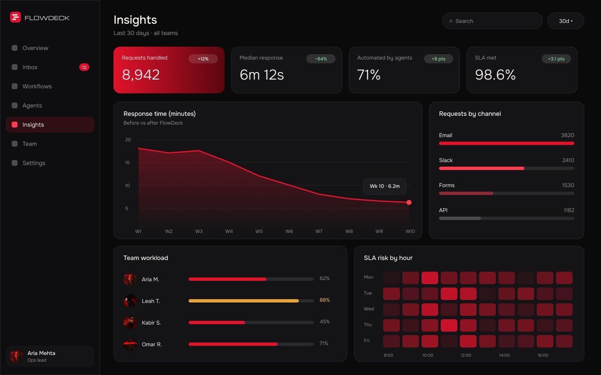

Freelance UI/UX Designer vs Agency: Which Is Right for Your Startup?
Both can be the right choice. Here’s an honest comparison so you can pick based on your project, not on a sales pitch.

If you’re building a product or redesigning a website, sooner or later you’ll face this choice: hire a freelance UI/UX designer or a design agency? I’m a freelancer, so I’ll be upfront about that, but both options are right for different projects.
When a freelance designer is the better fit
- You want to work directly with the person doing the design
- Your scope is clear: an app, a dashboard, a website or a redesign
- You need to move fast without layers of account managers
- Your budget needs to go into design, not overheads
With a freelancer, feedback goes straight to the designer, so iterations are quick and nothing gets lost in translation.
Freelancers also tend to specialise. If you need someone who has designed SaaS dashboards or e-commerce checkouts many times, a specialist freelancer often brings more relevant experience than a generalist team.
When an agency makes more sense
- You need branding, design, development and marketing all at once
- The project needs a large team working in parallel
- You want one company accountable for the whole build
Agencies are also useful when you need a lot of capacity quickly, for example several designers working on a large platform at once, or when your company’s procurement process requires a registered firm.
Cost
Agencies carry the cost of offices, sales and project managers, and that’s reflected in their rates. Freelancers usually cost less for the same design scope. The real question isn’t price alone, though; it’s how much of your budget becomes actual design work.
Communication and speed
Agencies often add structure: kick-offs, status reports and account managers. That helps on large projects but can slow small ones. A good freelancer replaces that with direct, frequent updates. I reply within 3–4 hours and share work in progress in Figma, so you’re never waiting for a “reveal”.

Ask any potential partner how they share progress. Regular check-ins, shared Figma files and clear deadlines matter more than the size of the team. The best results come when you can see the work evolve and steer it early.
Quality and reliability
Quality depends on the people, not the business model. Judge any designer or agency on three things: real case studies that show process, reviews from past clients and how well they understand your users in the first call.
- Do their case studies explain decisions, not just show pretty screens?
- Are reviews verified, for example on Upwork or LinkedIn?
- Do they ask about your users and goals before talking about visuals?
- Can they explain how they hand off designs to developers?
The hybrid option
Many agencies quietly work with freelance designers behind the scenes. If you’re an agency yourself and need extra design capacity, that’s exactly what a white-label design partner is for.
What a good working relationship looks like
Whoever you choose, agree on a few things before work starts: the scope, how many rounds of feedback are included, how you’ll communicate and what your developers will receive at the end.
- A short discovery call to understand users and goals
- Wireframes or flows to agree on structure first
- High-fidelity UI with clear review points
- Developer-ready Figma files and a handoff session
Clear steps protect both sides and keep the project on budget, whether your designer works alone or inside a large agency.
So which should you choose?
If you need focused UI/UX design with direct communication, start with a freelancer. If you need a full team across many disciplines, an agency may be worth the premium. Browse my case studies to see how I work, or book a free call and we’ll work out what fits your project.
Send me your screens and I’ll show you where users drop off and what to fix first.
Quick answers
Is it cheaper to hire a freelance UI/UX designer than an agency?
Usually yes for the same design scope, because freelancers don’t carry agency overheads. Compare how much of the budget goes into actual design work.
How do I choose a good freelance UI/UX designer?
Look for case studies that show process, verified client reviews, clear communication and experience with products similar to yours.